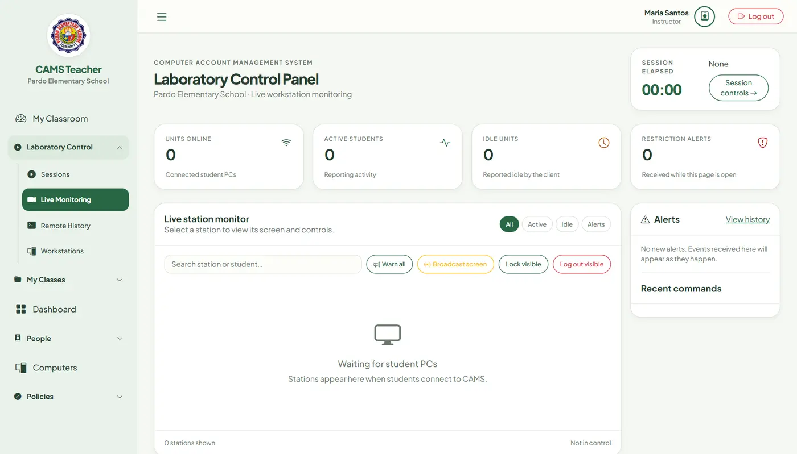
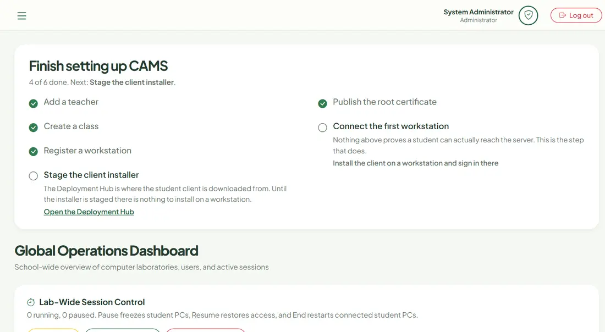
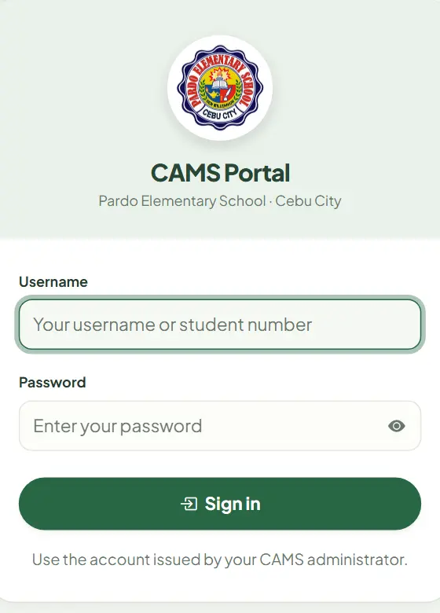

One operational picture, from first login to final logout.
CAMS replaces paper logs and disconnected utilities with a coordinated server, browser portal, and Windows workstation agent. Active teachers can monitor and control all connected student workstations and manage shared accounts, classes, and policies. Administrators retain deployment and system administration.
Observe
Authenticated live screen grids, active app state, idle status, and alerts.
Guide
Warnings, screen broadcast, timed sessions, and global classroom policies.
Act
Authorized lock, unlock, logout, restart, shutdown, and remote input.
Account
Local attendance, activity timelines, reports, and audit records.
Clear authority at every layer.
Each interface is shaped around the work that role is allowed to perform.
Teacher
Run the active laboratory
Monitor all connected student workstations in a live grid
Start the lab session for every student at once, then pause, resume, or end it
Send warnings and broadcast the teacher screen
Use permitted workstation and remote controls
Review scoped alerts, records, and exports

Administrator
Configure the environment
Manage accounts, classes, computers, and mappings
Set global restrictions and session rules
Review audit, usage, session, and system records
Back up, validate, and stage restore of local SQLite data
Prepare trusted packages in the local Deployment Hub

Student
Enter a managed session
Sign in once the teacher starts the lab session
See unit, identity, and elapsed session time
Receive policy notices and teacher messages
Review alerts in the student portal
Return to the locked sign-in screen when the session ends

Monitoring with a defined edge.
CAMS is designed for supervised classroom sessions on a private local network. Operational records remain on the CAMS server's local SQLite database; there is no required CAMS cloud service.
Live screen frames show visible display content, including any browser pages on screen.
Data boundaryYour classroom LAN
Used for classroom operations
Live screen frames during authenticated sessions
Active application and idle status
Normalized browser domain and policy status
Session, alert, attendance, and command events
Bounded client telemetry queued during brief outages
Outside the product boundary
No keystroke logging or clipboard capture
No microphone, camera, or ambient recording
No browser credentials, cookies, or page content in telemetry
No full URL paths, queries, or fragments in telemetry
No required third-party analytics or cloud upload
A compact system with explicit trust paths.
Run the self-contained server on the teacher or lab control PC. Student agents discover it on the LAN or use a manually configured HTTPS endpoint.
Control surfaceTeacher / Admin browser
Authenticated role portals
HTTPS
CAMS serverASP.NET Core + SignalR
EF Core / local SQLite
TCP 5000
Traffic: Authenticated screen and control messages travel over HTTPS SignalR. UDP broadcast assists discovery only.
Fallback: If a network blocks broadcast, configure https://<server-ip>:5000/remoteMonitoringHub manually.
From clean PC to managed lab.
Plan one Windows control PC for the server and one CAMS client installation per student workstation. Keep every machine on the same trusted, non-guest network.
Windows x64
TCP 5000
UDP 5001
No separate .NET runtime
Prepare the server PC
Set a protected Cams__InitialAdminPassword environment variable before first launch. Do not reuse a classroom account password.
Install CAMS Server
Download and run CAMS-Server-Setup.exe. The installer configures the application and refreshes its TCP 5000 firewall rule.
Start on the target network
Connect the control PC to the classroom LAN first, then start CAMS. Local CA mode creates a server certificate covering the current machine name and LAN addresses.
Use the authenticated Deployment Hub
Sign in as administrator and open https://<server-ip>:5000/Admin/Deployment. Confirm the endpoint is certificate-compatible; download the local trust certificate or prepare the verified workstation bundle there.
Install each student client
Run CAMS-Client-Setup.exe, enter the displayed SignalR endpoint, and select only the CAMS-Server-Root.cer obtained from your local Deployment Hub.
Verify before class
Start a lab session from Session Control, then sign in with a test student account, confirm the workstation appears in the teacher monitoring grid, and test a permitted warning or lock action before enrolling the full lab.
Current stable release
CAMS v2.20.4
Release downloads are hosted by GitHub. Verify each installer against its published SHA-256 file before deployment.
CAMS Server Setup
Teacher or lab control PC. Self-contained Windows x64 installer.
Admin, teacher, and student identities enter through role-aware authorization. Live monitoring and bulk session controls are lab-wide. Individual session actions, analytics, and records retain teacher/class checks.
Encrypted local transport
Web portals and SignalR traffic use HTTPS. The endpoint must match the active certificate before clients are deployed.
Private keys stay private
Local CA private keys remain on the server. Student PCs receive only the deployment-specific public root certificate.
Verifiable packages
GitHub release checksums and manifest metadata let administrators verify downloads before execution or redistribution.
Resolve the network first.
Most onboarding issues come from endpoint selection, certificate mismatch, firewall policy, or Wi-Fi client isolation.
The client cannot discover the server.
Confirm both PCs are on the same non-guest subnet. Allow UDP 5001 on student PCs, or skip discovery and enter https://<server-ip>:5000/remoteMonitoringHub manually.
The browser or client reports an untrusted certificate.
Do not bypass the warning. Sign in to the local CAMS server, open /Admin/Deployment, and install that deployment's public CAMS-Server-Root.cer for the current Windows user.
The certificate does not match the server IP.
Connect the server PC to the target network and restart CAMS so local CA mode can issue a certificate for the current LAN address. Use an endpoint marked compatible in the Deployment Hub.
A phone hotspot connects devices but CAMS cannot reach them.
Some hotspots isolate clients or block broadcast. Disable client isolation if available, use the teacher PC's Wi-Fi IPv4 address instead of localhost, and verify TCP 5000 is reachable.
A student sees "No session yet" when signing in.
Students can only sign in while a lab session is running. In the teacher portal, open Session Control, choose Start New Session, and pick a session rule; the waiting students can then press Login again.
An installer hash does not match.
Do not run the file. Delete it, download the installer and checksum again from the same GitHub release, and repeat SHA-256 verification.
The server moved to another network.
Restart CAMS after joining the new network. Confirm the new compatible endpoint in /Admin/Deployment; update clients if the saved server address changed.